Acids & Bases
What mass of solid NaCH3CO2 (molar mass = 82.0 g/mol) should be added to 1.00
L of 0.350 M CH3CO2H to make a buffer of pH = 5.20?
(Ka for CH3CO2H = 1.8 × 10-5)
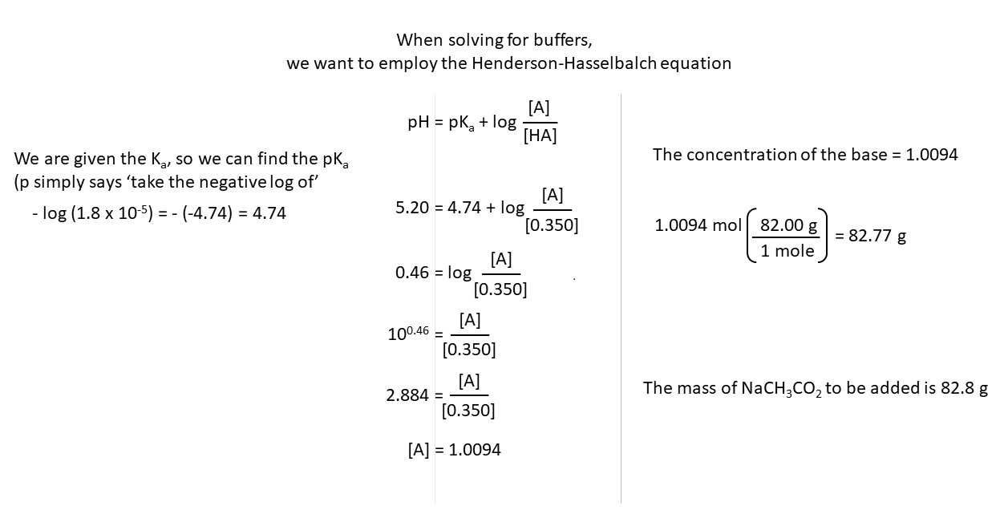
Find Out
The pH of a 1.0 × 10–8 M H3O+ solution is ____?
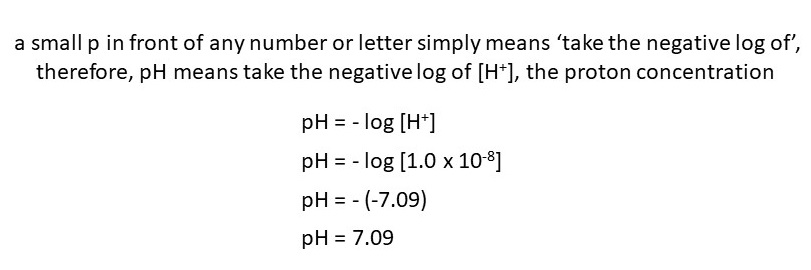
Find Out
Calculate the pH of 0.010 M HNO3 solution?
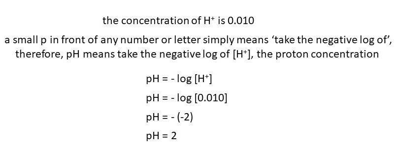
Find Out
What happens when an acid and base are added to water?
a) Acids increase both H+ and OH- ion concentrations
b) Bases decrease both H+ and OH- ion concentrations
c) Acids increase H+ and decrease OH- concentrations
d) Bases increase H+ and decrease OH- concentrations
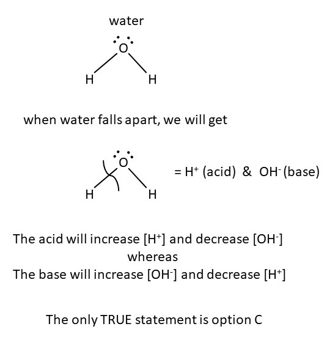
Find Out
The pH of blood is normally 7.400
What is the hydronium ion concentration?
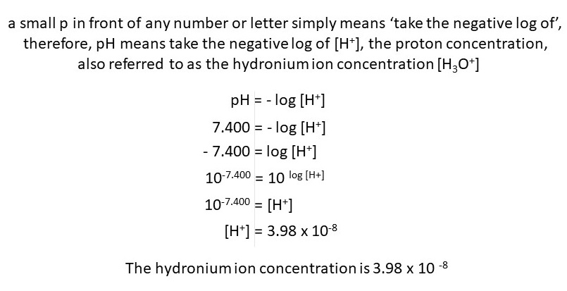
Find Out
In the chemical equation PH2– + H2O ⇒
PH3 + OH–, is H2O the acid?
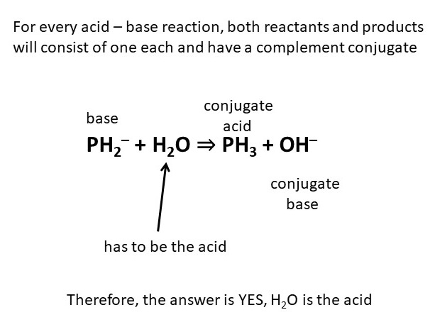
Find Out
A solution has a hydrogen ion concentration measured by chemical means.
It has a concentration of H+ = 5.23 x 10-8. What is the pH value of the solution?
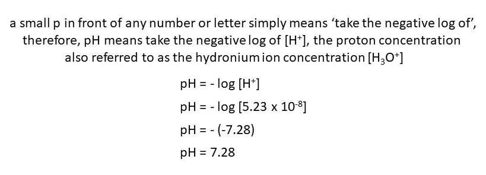
Find Out
What volume of 0.186 M H2SO4 is needed to titrate 34.2 mL of 0.320 M NaOH in
the reaction?
H2SO4 (aq) + 2 NaOH (aq) ⇌
Na2SO4 (aq) + 2 H2O (l)
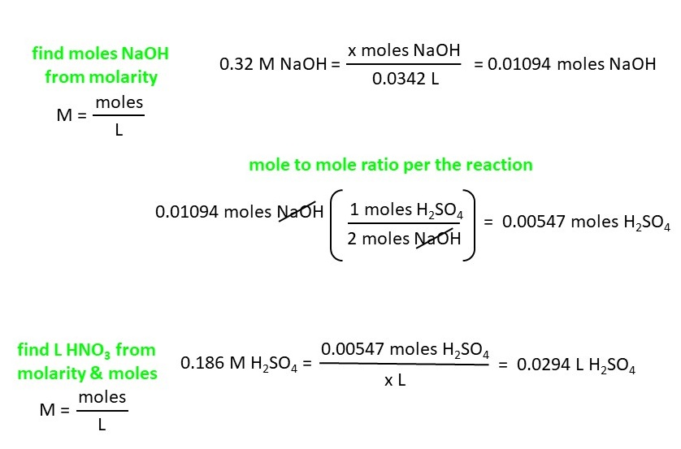
Find Out
How many liters of 3.2 M HNO3 will be required to reach the end point with 4.0 L of 2.0 M RbOH?
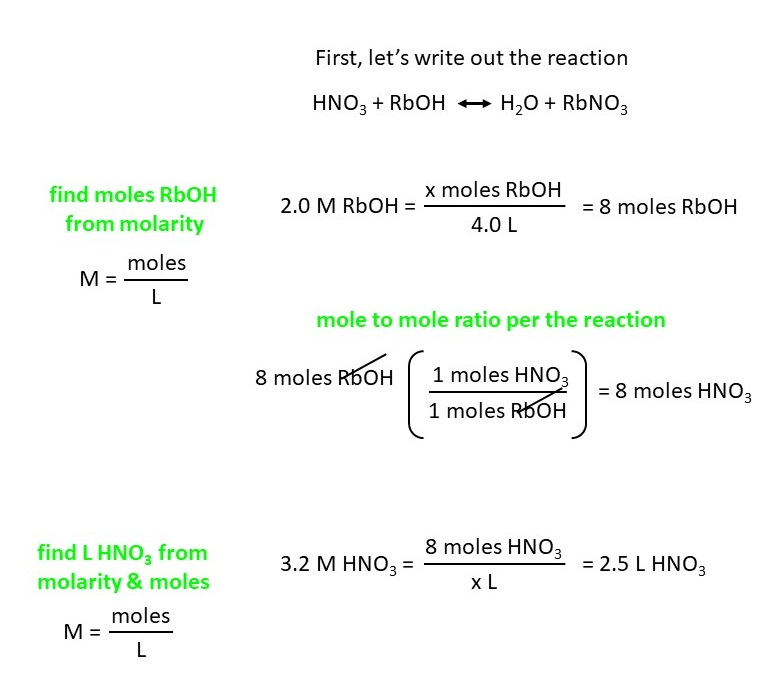
Find Out
___________________________________________________________________________________
Composition
1. How many grams are contained in 0.44 moles of calcium?
2. Convert 4.54 moles magnesium carbonate to
molecules.
3. What is the mass of 4.1 x 1020 molecules of carbon monoxide?
4.
How many particles are contained in 1.67 g CaO?
5. The number of nitrogen molecules in 5.2 moles
of N2 is ________.
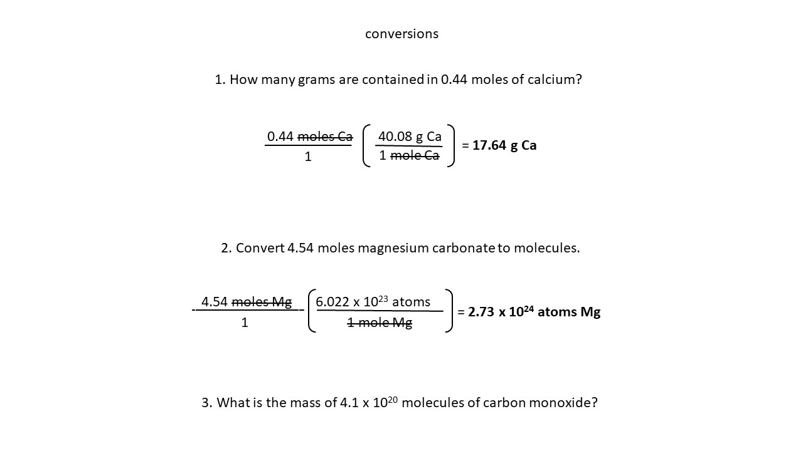
Find Out
How many moles of CO2 contain 2.79 x 1024 molecules?
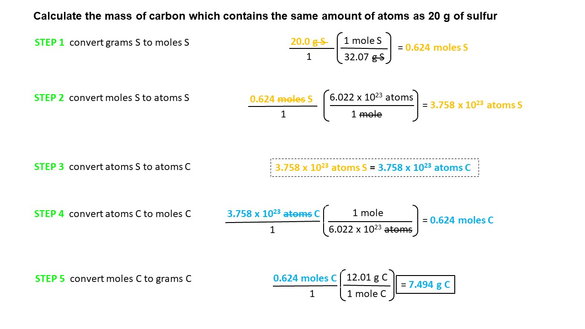
Find Out
What is the mass, in grams, of 4.59 moles of oxygen gas?
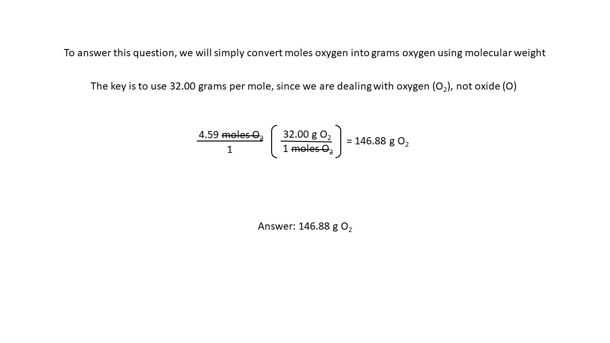
Find Out
Elemental analysis of a compound showed that it consisted of 54.53% carbon, 9.15% hydrogen and 36.32% oxygen
How many hydrogens appear in the empirical formula of the compound?
A) 2
B) 4
C) 6
D) 9
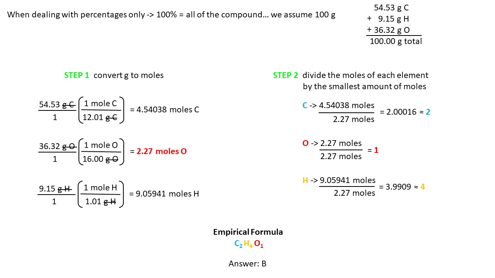
Find Out
If 200 grams of salt is dissolved in 8000 grams of water, what is the salt concentration in percent?
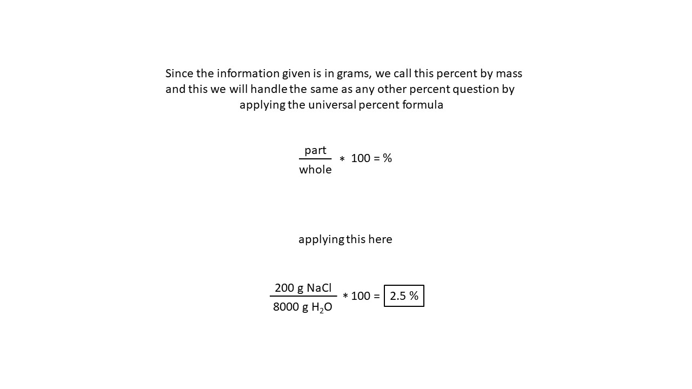
Find Out
Calculate the mass of carbon which contains the same amount of atoms as 20 g of sulfur
Find Out
How many oxygen atoms are in one mole of propanol?
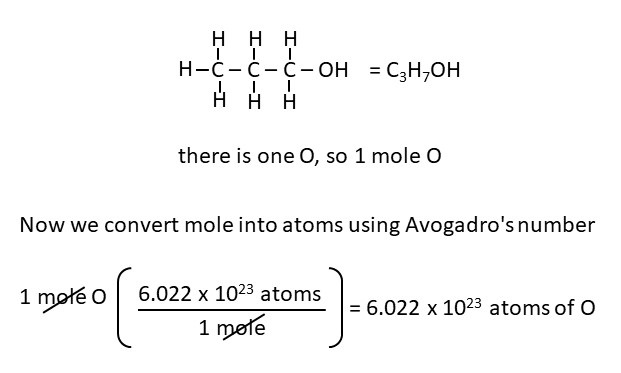
Find Out
Which of the following has the same number of atoms as 55.8 grams of Fe?
55.8 g He
32.0 g O3
32.0 g O2
16.0 g O2
 Find Out
Find Out
How many molecules of ibuprofen (C15H18O2) contain 2.84 x 1023 atoms
of hydrogen?
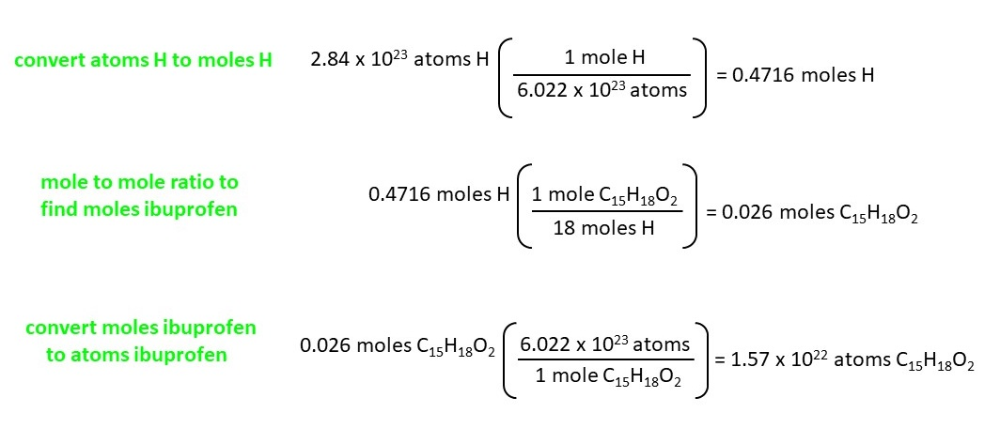
Find Out
How many grams are 4.2 x 1024 atoms of sulfur?
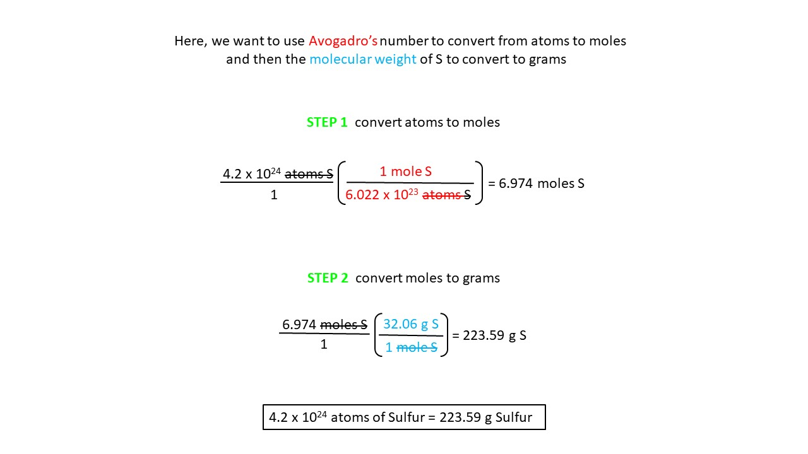
Find Out
What is the mass in grams of 2.50 gal of water?
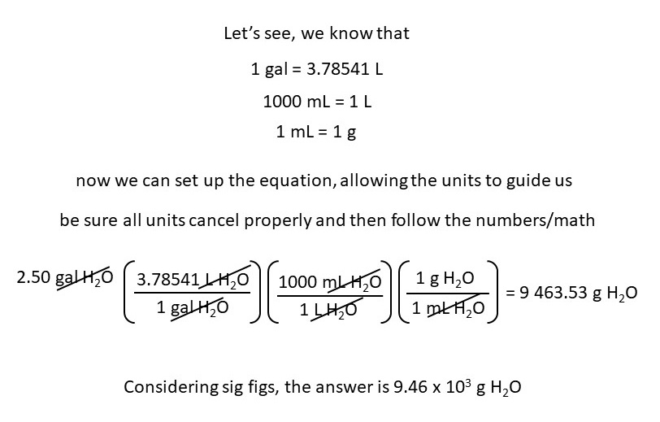
Find Out
Find the number of moles in 4.96 g of B2O3?
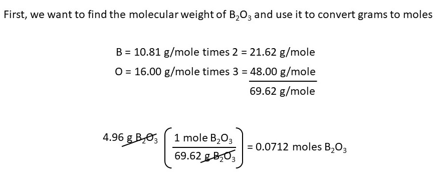
Find Out
The process in which solid converts into gas directly is known as?
A. vaporization
B. sublimation
C. crystallization
D. distillation
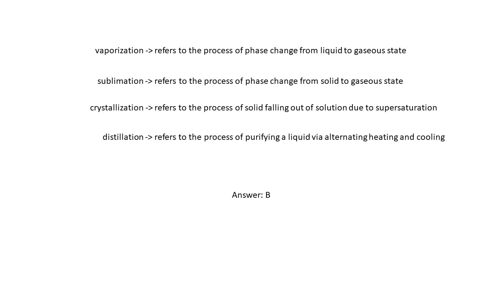
Find Out
Would ammonia be a solid, liquid or gas at
a) -55 °C
b) -17°C
c) -113°C
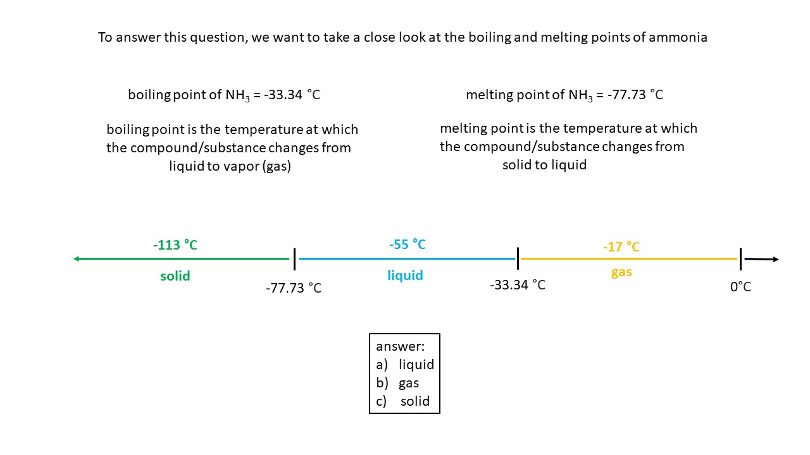
Find Out
___________________________________________________________________________________
Reactions
How many moles of sulfuric acid are required to react with 5 moles of aluminum metal via the following reaction?
2 Al(s) + 3 H2SO4(aq) ⇒ Al2(SO4)3(aq) + 3
H2(g)
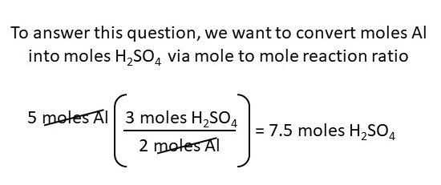
Find Out
In the reaction below, how many moles of C can be produced from 3.28 moles of A?
3A + 3B ⇒ 3C + D
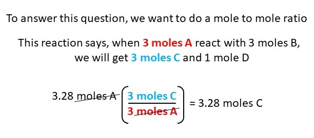
Find Out
Determine the theoretical yield in grams of ethanol when 833 g of glucose is used according to the following
fermentation reaction
C6H12O6(aq) ⇒
2 C2H5OH(l) + 2 CO2(g)
 Find Out
Find Out
How many moles of sodium metal is obtained when 36.0 moles of iron metal completely reacts with sodium bromide?
Fe + 3 NaBr ⇒ FeBr3 + 3 Na
 Find Out
Find Out
What mass of oxygen is needed for the complete combustion of 6.20 × 10-3 g of methane?
Find Out
Use the equation given to solve the following problems:
Na3PO4 + 3 AgNO3 ⇒ Ag3PO4 + 3 NaNO3
(a) How many moles of Na3PO4 would be required to react with 1.0 mol of AgNO3
(b) How many moles of NaNO3 can be produced from 0.50 mol of Na3PO4?
(c) How many moles of Ag3PO4 can be produced from 5.00 mol of Na3PO4?
(d) If you have 3.5 mol of Na3PO4, how many moles of AgNO3 will be needed
for a complete reaction?
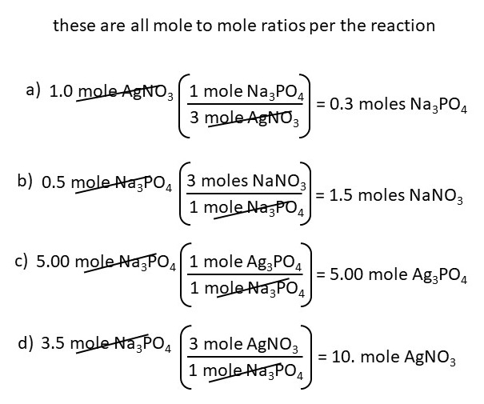⇒ Ag3PO4 + 3 NaNO3"
hspace="7"style="width:75px;height:52px;border:0" align="right">
Find Out
Hydrogen peroxide, H2O2 reacts with manganate (VII) ions, MnO4-,
in basic solution according to the following equation
2 MnO4-(aq) + 3 H2O2(aq) ⇒
2 MnO2(g) + 3 O2(g) + 2 OH-(aq) + 2 H2O(l)
How many moles of hydrogen peroxide would be needed to produce eight moles of water?
A. One
B. Two
C. Three
D. Twelve
Find Out
Mercury can be obtained by reacting mercury(II) sulfide with calcium oxide.
How many grams of calcium oxide are
needed to produce 134.4 g of Hg?
4 HgS(s) + 4 CaO(s) ⇒ 4 Hg(l) + 3 CaS(s)
+ CaSO4(s)
Find Out
Automobiles are often implicated as contributors to global warming because they are a source of the greenhouse gas
CO2.
How many pounds of CO2 would your car release in a year, if it was driven 150. miles per week?
In your calculations, assume that gasoline is octane (molecular formula C8H18)
and that its burned completely to CO2 and H2O in the engine of your car.
Also assume that the car averages 25.3 miles per gallon and the density of octane is 0.703 g cm-3.
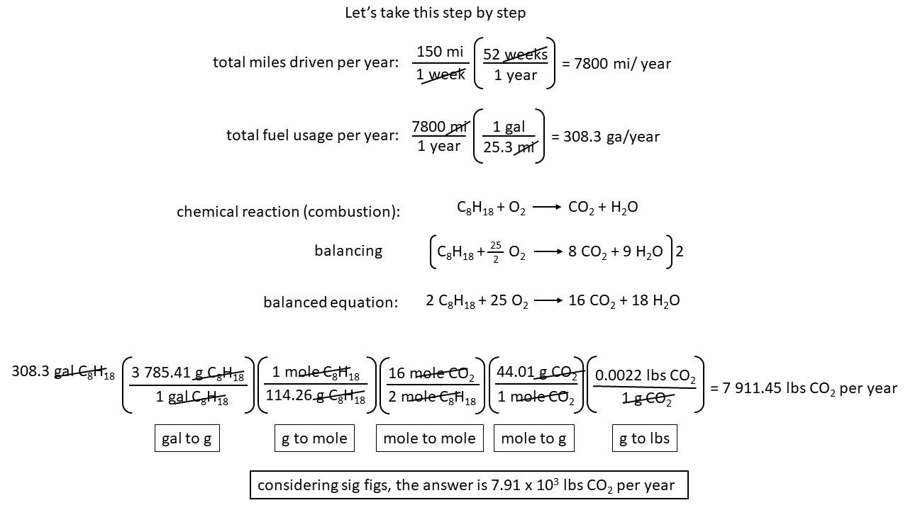
Find Out
How many grams of aluminum are needed to react completely with 23.7 grams of oxygen in the synthesis of aluminum oxide?
Find Out
Xenon can be made to react with fluorine gas to produce xenon tetrafluoride.
If 16.30 g of xenon is used, what
mass of fluorine, in grams, is needed to react completely with the xenon?
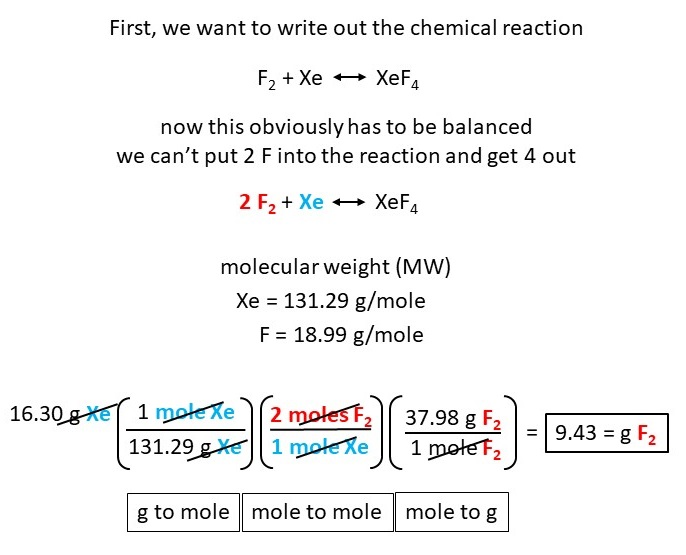
Find Out
Ammonia is formed from the reaction of hydrogen and nitrogen.
3 H2 (g) + N2 (g) ⇒ 2 NH3 (g)
How many grams of which reagent remains theoretically after 120 moles of hydrogen are reacted with
50 moles of nitrogen?
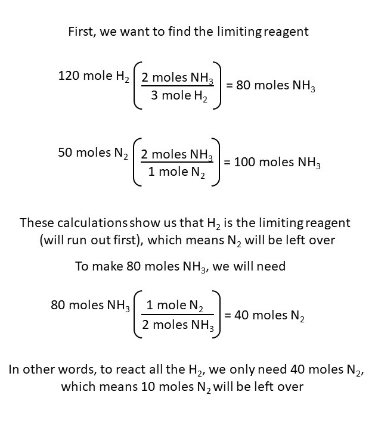
Find Out
Balance C3H5N3O9 ⇒
CO2 + N2 + H2O + O2
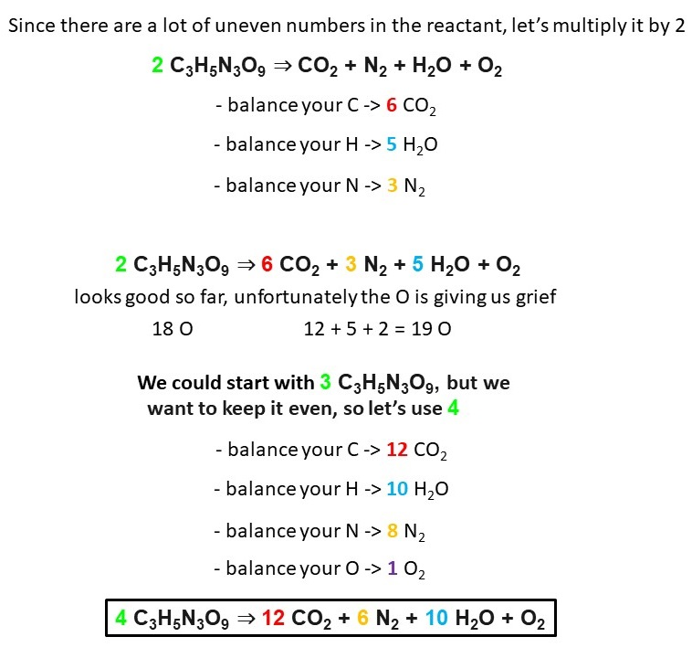 CO2 + N2 + H2O + O2"
hspace="7"style="width:75px;height:52px;border:0" align="right">
Find Out
A student carried out an experiment, using a hydrate of cobalt(II) chloride,
CoCl2 ⇒
n H2O in an attempt to find the value of n.
The student used 5.125 grams of the hydrate and after the heating the anhydrous formed
weighed 2.797 grams.
What is the value of n based on these experimental results?
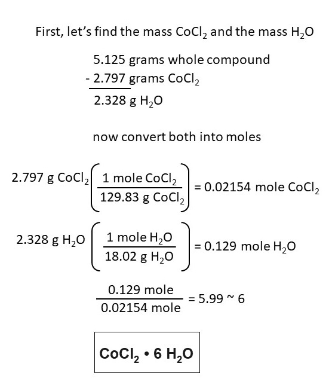
Find Out
What mass of oxygen gas should react with 0.500 mol of propane at STP conditions?
C3H8
(g)+ 5 O2(g) ⇒ 3 CO2(g) + 4 H2O(g)?
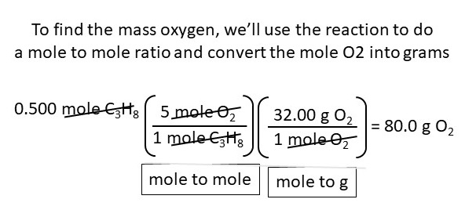
Find Out
116.6 g of magnesium hydroxide is allowed to react with 500 mL of 2 M HCl.
What is the maximum amount of
magnesium chloride that can be produced?
a. 23.32 g
b. 46.64 g
c. 116.6 g
d. 233.2 g
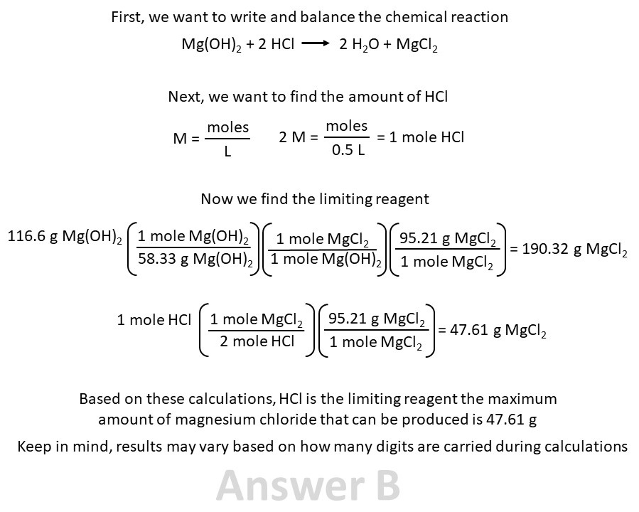
Find Out
___________________________________________________________________________________
Gases
Imagine that you have a 6.00 L gas tank and a 4.00 L gas tank.
You need to fill one tank with oxygen and the other with acetylene to use in conjunction with your welding torch.
If you fill the larger tank with oxygen to a pressure of 156 bar, to what pressure should you fill the acetylene tank to ensure
that you run out of each gas at the same time?
Assume ideal behavior for all gases.
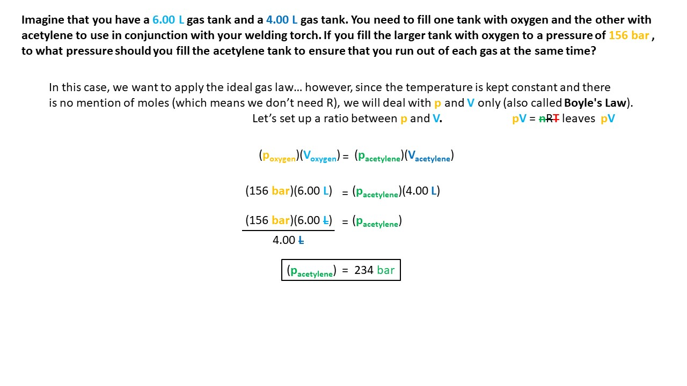
Find Out
If 90.5 moles of an ideal gas is at 1.77 atm at 34.80 °C,
what is the volume of the gas?
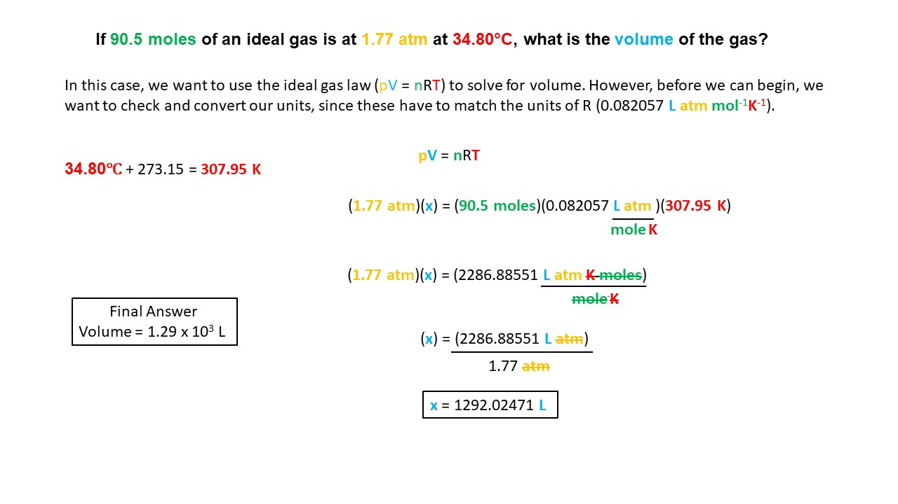
Find Out
A motorist fills his car tires to 32 lb/in2 pressure at a temperature of 30°C. Assuming no change in volume,
what will the pressure in the tires be when the motorist drives across Death Valley, with a pavement temperature of 78°C?
A. 37 lb/in 2
B. 83 lb/in 2
C. 12 lb/in 2
D. 4.8 lb/in 2
E. 28 lb/in2
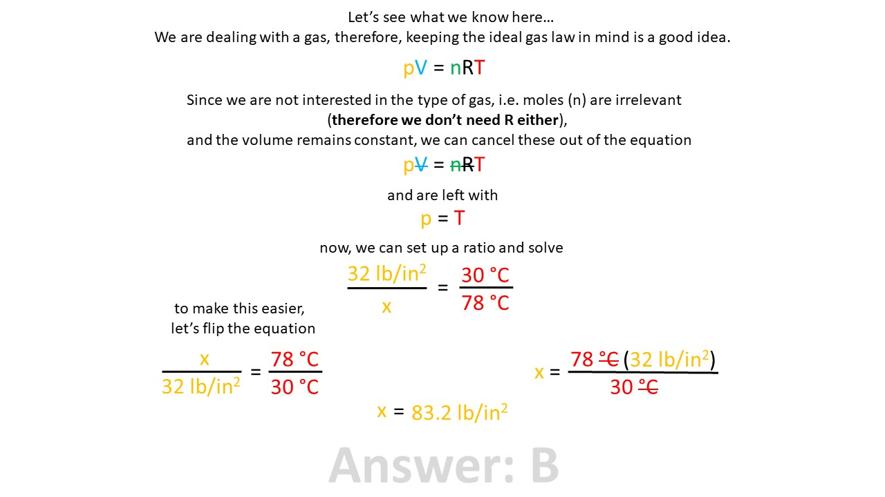
Find Out
A gas with a volume of 2 L is allowed to expand to a volume of 10 L.
What happens to the pressure in the
container if the temperature remains constant?
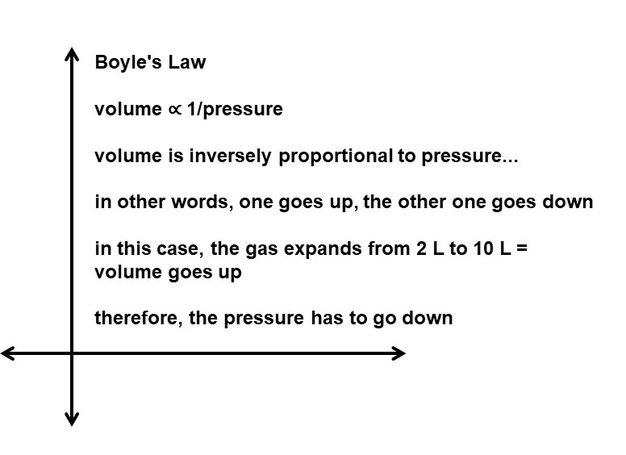
Find Out
How many moles of gas would it take to fill an average man’s lungs,
total capacity of which is about 4.5 L?
Assume 1 atm pressure and 37 ℃
A. 11.2 mol
B. 0.75 mol
C. 37 mol
D. 1.24 mol
E. 0.177 mol
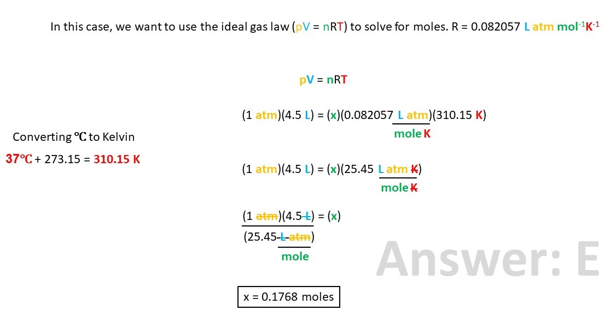
Find Out
The mass of 2.37 L of a gas is 8.91 g. What is the density of the gas?
A. 21.1 g/L
B. 3.76 g/L
C. 6.54 g/L
D. 0.266 g/L
E. None of these
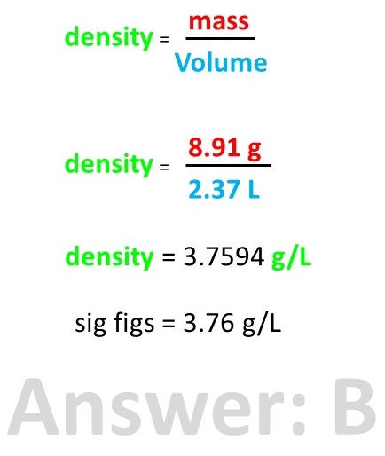
Find Out
The number of moles in 2.50 L of nitrogen gas at 100 °C and 700 mm Hg is
A. 57.1
B. 2.11
C. 0.280
D. 0.0752
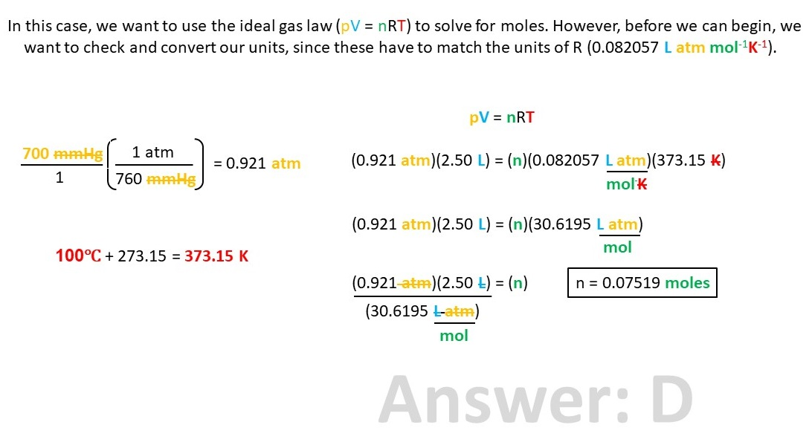
Find Out
What will happen to the volume of a bubble of air found underwater in a deep lake, if the bubble rises to the surface,
where the temperature is double what it was underwater and the pressure is half of what it was underwater?
Its volume will become…
A. greater by a factor of 2
B. greater by a factor of 4
C. greater by a factor of 2.5
D. smaller by a factor of 4
E. volume will not change under these conditions
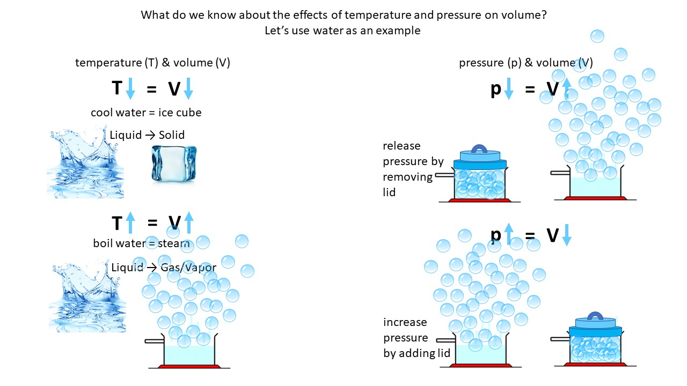
Find Out
A 12 L gas confined in a container exerts 3.8 × 104 mm Hg.
If the pressure is reduced to 760 mm Hg,
what will be the volume of the gas?
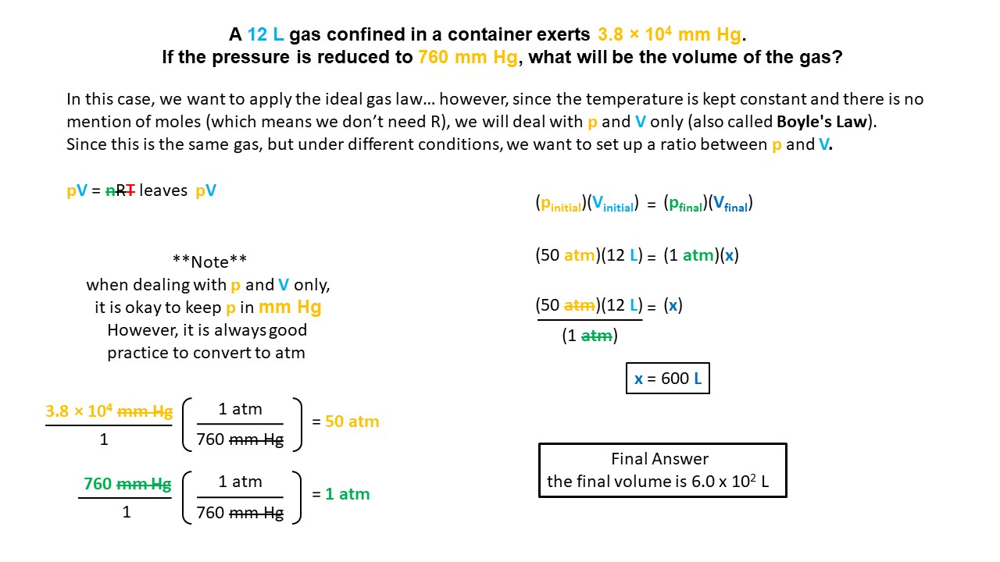
Find Out
You purchase a butane tank that can hold gas safely up to a pressure of 38.1 atm.
When the tank contains 100 grams of butane (C4H10) at 19.9°C, the gas exerts a pressure of 13.8 atm.
What is the highest temperature to which the butane can be heated safely?
(Report your answer in °C)
Assume that butane is an ideal gas that does not liquify.
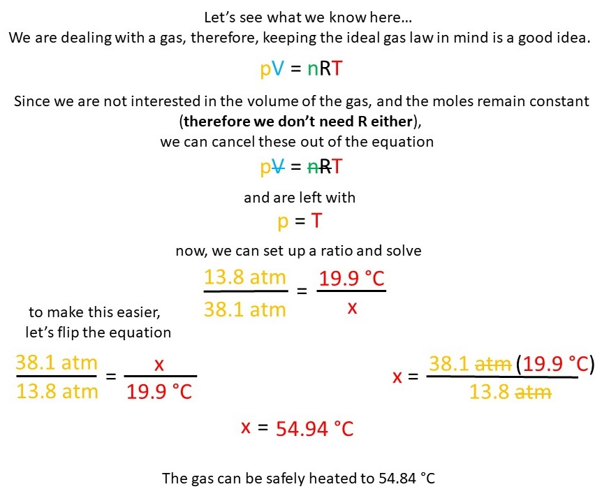
Find Out
A sample of gas has an initial volume of 2.4 L at a pressure of 843 mm Hg and a temperature of 304 K.
If the gas is heated to a temperature of 402 K and therefore expands to 4.7 L, what is its final pressure (in mm Hg)?
 Find Out
Find Out
A sample of gas occupies a volume of 3.2 L at 1.8 atm. What would be its volume if the pressure is doubled?
reduced by one-half?
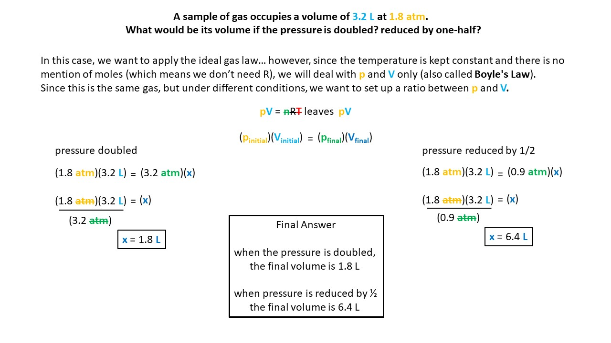
Find Out
A 268 cm3 sample of an ideal gas at 18°C and 748 Torr pressure is placed in an evacuated container
of volume 648 cm3.
To what Celsius temperature must the assembly be heated so that the gas will fill the
whole chamber at 748 Torr?
A. 431 °C
B. 597 °C
C. 704 °C
D. 120 °C
E. 324 °C
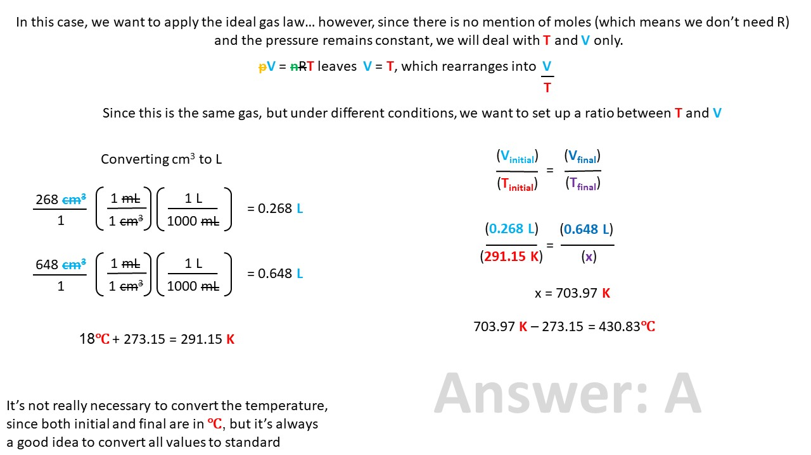
Find Out
If a metal reacts with a strong acid at 25 ℃ and produces 0.023 mole of H2,
what is the volume of "dry" hydrogen at STP?
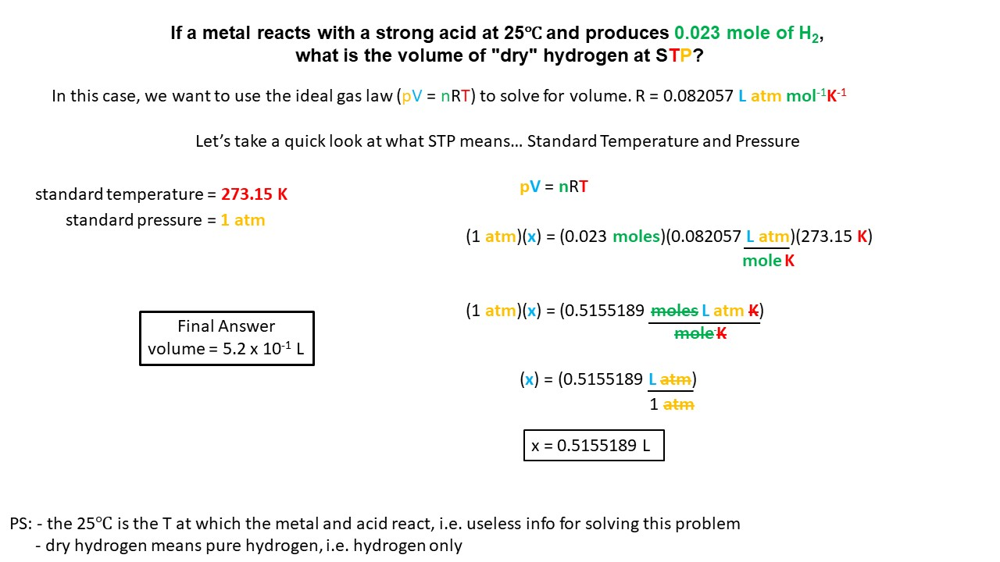
Find Out
Nitrogen gas fills a 300. L reaction container at 100℃ and 1.00 atm.
Determine the volume of the same quantity of nitrogen at 0℃ and 1.25 atm.
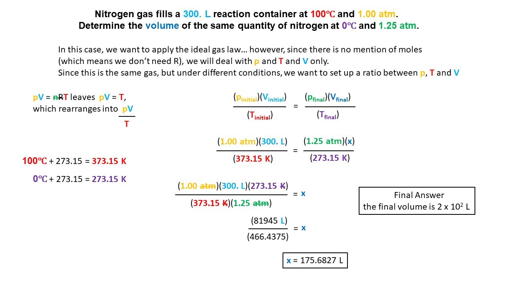
Find Out
Determine the pressure change when a constant volume of gas at 1.00 atm is heated from 20.0℃ to 303 K?
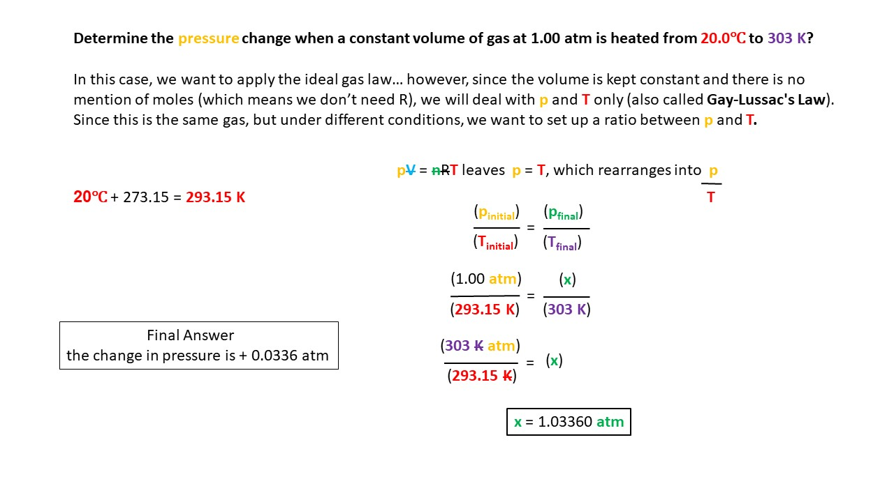
Find Out
A 28.8 g piece of dry ice is allowed to sublime into a large balloon.
Assuming that all of the carbon dioxide ends up in the ballroom, what will the volume
of the balloon be at a temperature
of 22℃ and a pressure of 742 mmHg
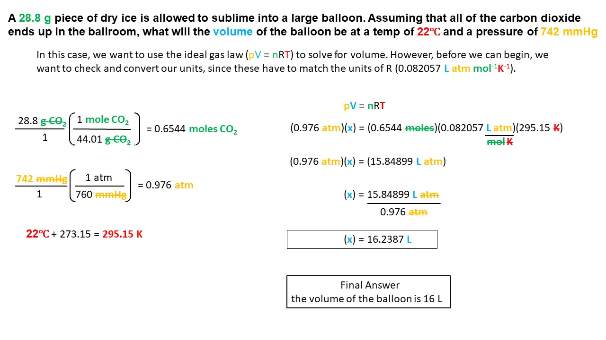
Find Out
325 mL of a gas at STP has a mass of 0.805 grams.
What is the molar mass of the gaseous compound?
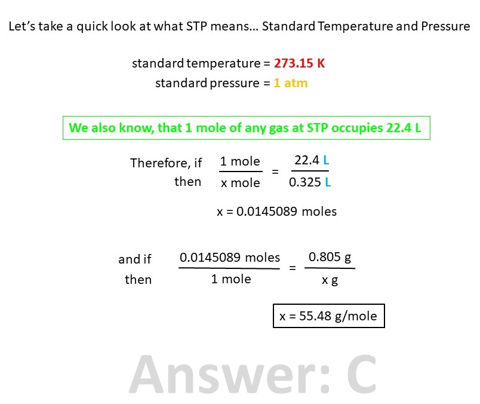
Find Out
The gas in a container has a pressure of 6 atm at 27°C.
What will the pressure be if the temperature is lowered
to -173°C?
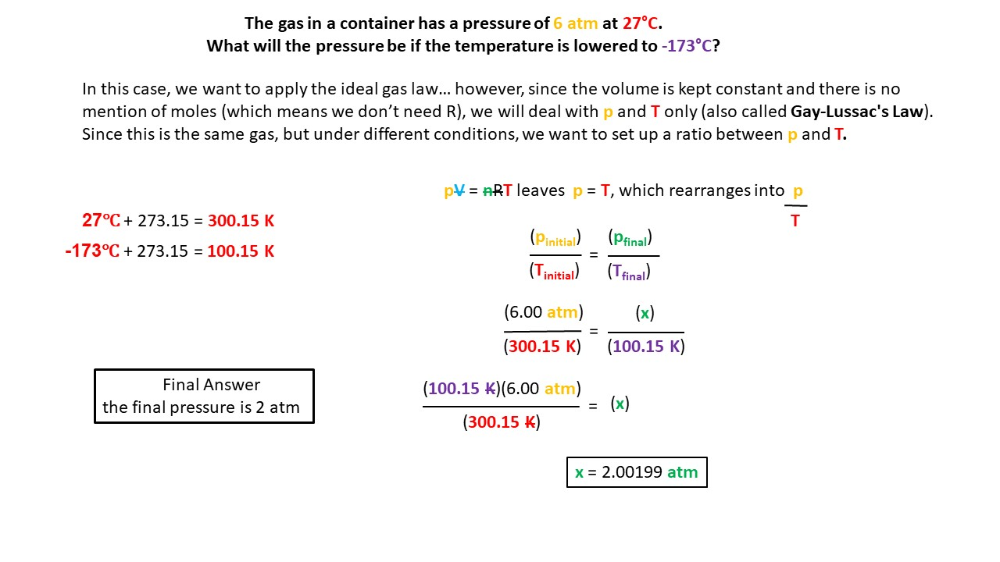
Find Out
If a gas is compressed from 8 L to 2 L and the temperature remains constant, what happens to the pressure?
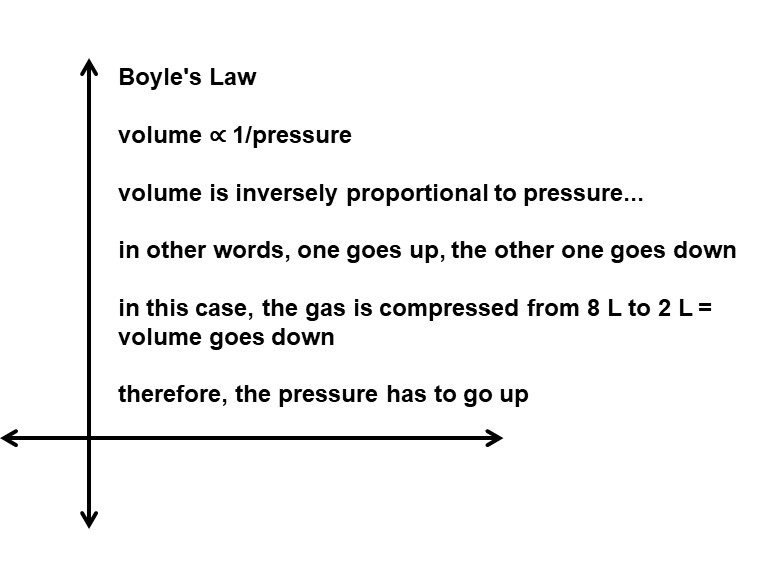
Find Out
How many moles of gaseous helium are found in a 500.0 mL flask at 25℃ and 745 torr?
Find Out
The tires on a particular road-bike can handle a pressure of 150. psi. What is this pressure in mm Hg?
A. 1420 mm Hg
B. 760 mm Hg
C. 10.2 mm Hg
D. 3810 mm Hg
E. 7760 mm Hg
Find Out
___________________________________________________________________________________
Solutions
___________________________________________________________________________________
Equilibrium
___________________________________________________________________________________
Energy
___________________________________________________________________________________
Redox
___________________________________________________________________________________
Nuclear
Composition
1. How many grams are contained in 0.44 moles of calcium?
2. Convert 4.54 moles magnesium carbonate to
molecules.
3. What is the mass of 4.1 x 1020 molecules of carbon monoxide?
4.
How many particles are contained in 1.67 g CaO?
5. The number of nitrogen molecules in 5.2 moles
of N2 is ________.

Find Out
How many moles of CO2 contain 2.79 x 1024 molecules?

Find Out
What is the mass, in grams, of 4.59 moles of oxygen gas?

Find Out
Elemental analysis of a compound showed that it consisted of 54.53% carbon, 9.15% hydrogen and 36.32% oxygen
How many hydrogens appear in the empirical formula of the compound?
A) 2
B) 4
C) 6
D) 9

Find Out
If 200 grams of salt is dissolved in 8000 grams of water, what is the salt concentration in percent?

Find Out
Calculate the mass of carbon which contains the same amount of atoms as 20 g of sulfur
Find Out
How many oxygen atoms are in one mole of propanol?

Find Out
Which of the following has the same number of atoms as 55.8 grams of Fe?
55.8 g He
32.0 g O3
32.0 g O2
16.0 g O2
Find Out
How many molecules of ibuprofen (C15H18O2) contain 2.84 x 1023 atoms
of hydrogen?

Find Out
How many grams are 4.2 x 1024 atoms of sulfur?

Find Out
What is the mass in grams of 2.50 gal of water?

Find Out
Find the number of moles in 4.96 g of B2O3?

Find Out
The process in which solid converts into gas directly is known as?
A. vaporization
B. sublimation
C. crystallization
D. distillation

Find Out
Would ammonia be a solid, liquid or gas at
a) -55 °C
b) -17°C
c) -113°C

Find Out
___________________________________________________________________________________
Reactions
How many moles of sulfuric acid are required to react with 5 moles of aluminum metal via the following reaction?
2 Al(s) + 3 H2SO4(aq) ⇒ Al2(SO4)3(aq) + 3
H2(g)

Find Out
In the reaction below, how many moles of C can be produced from 3.28 moles of A?
3A + 3B ⇒ 3C + D

Find Out
Determine the theoretical yield in grams of ethanol when 833 g of glucose is used according to the following
fermentation reaction
C6H12O6(aq) ⇒
2 C2H5OH(l) + 2 CO2(g)
Find Out
How many moles of sodium metal is obtained when 36.0 moles of iron metal completely reacts with sodium bromide?
Fe + 3 NaBr ⇒ FeBr3 + 3 Na
Find Out
What mass of oxygen is needed for the complete combustion of 6.20 × 10-3 g of methane?
Find Out
Use the equation given to solve the following problems:
Na3PO4 + 3 AgNO3 ⇒ Ag3PO4 + 3 NaNO3
(a) How many moles of Na3PO4 would be required to react with 1.0 mol of AgNO3
(b) How many moles of NaNO3 can be produced from 0.50 mol of Na3PO4?
(c) How many moles of Ag3PO4 can be produced from 5.00 mol of Na3PO4?
(d) If you have 3.5 mol of Na3PO4, how many moles of AgNO3 will be needed
for a complete reaction?
⇒ Ag3PO4 + 3 NaNO3" hspace="7"style="width:75px;height:52px;border:0" align="right"> Find Out